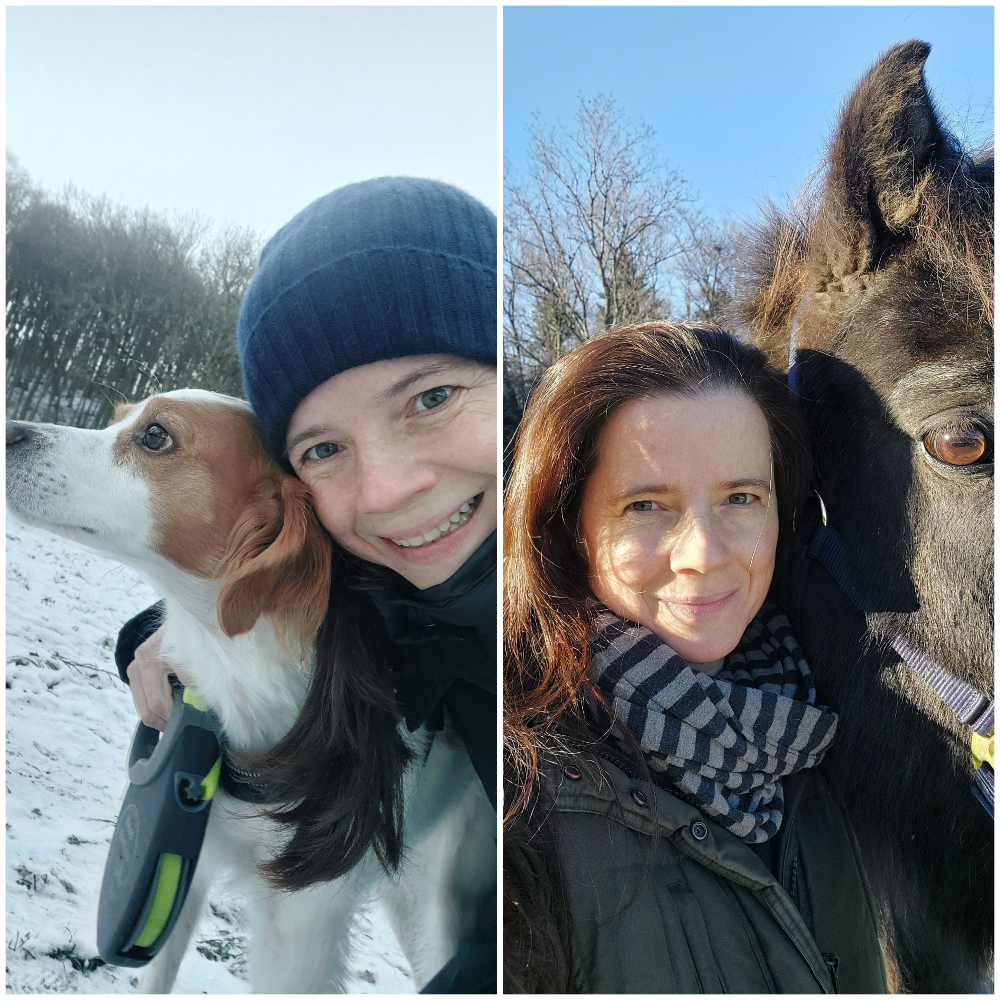

Ich schreibe über Wissenschaft, Natur und Gesundheit – und über Themen, die unsere Umwelt und die Gesellschaft bewegen.
Ich habe Biologie studiert und danach in der Verhaltensforschung und Genetik gearbeitet. Anschließend lebte ich mehrere Jahre in Dänemark, wo ich den Einfluss von Offshore-Windkraftanlagen auf Schweinswale (Phocoena phocoena) erforschte.
Nach drei Jahren kehrte ich mit meiner kleinen Familie nach Wien zurück und begann bei Die Presse in der Wissenschaftskommunikation zu arbeiten. Seitdem lässt mich das Schreiben über Wissenschaft nicht mehr los.
